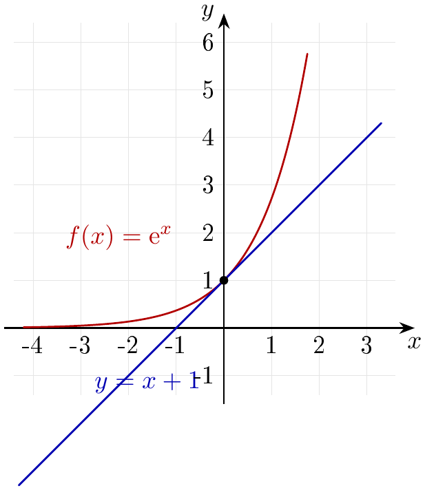
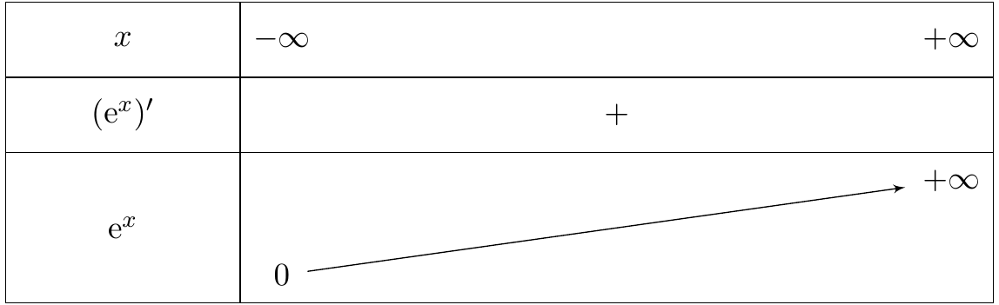
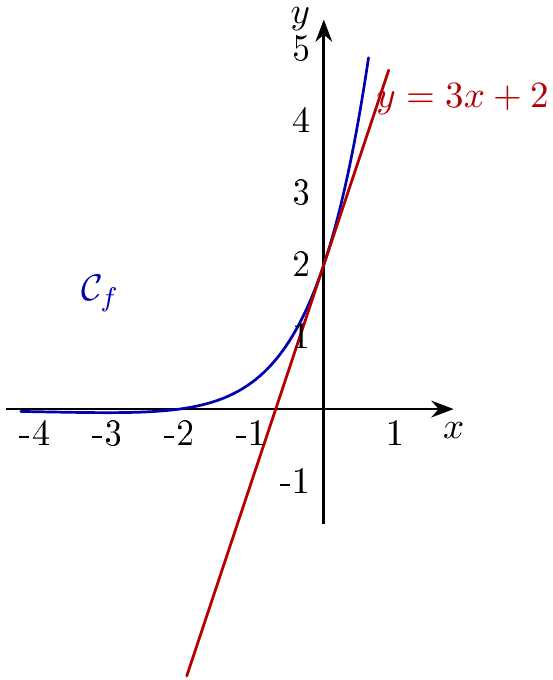

Chapitre IV : Fonction exponentielle
Terminale STMG · Chapitre 5 — Fonction exponentielle · cours de Frederik de Peyrelongue
I. Définition de la fonction exponentielle de base $e$
1.1 Définition
Parmi toutes les fonctions $x\longmapsto a^{x}$, il en existe une seule dont la tangente à la courbe représentative au point $(0\,;1)$ a pour coefficient directeur $1$.

Cette fonction est la fonction exponentielle de base $e$, notée $\exp$, telle que pour tout réel $x$ on a :
Le réel $e$ est environ égal à $2{,}718$.
Remarques. Avec la calculatrice, on peut obtenir une valeur approchée de $e$ :
Dans Introductio in Analysin infinitorum, publié en 1748, Euler explique que :
Rappelons que, par exemple, $5!$ se lit « factorielle 5 » et est égal à $1\times2\times3\times4\times5$.
Par cette formule, il obtient une estimation de $e$ avec $18$ décimales exactes.
Nous devons aussi à Euler la démonstration de l'irrationalité de $e$.
Comme $\pi$, le nombre $e$ est un nombre irrationnel, c'est-à-dire qu'il s'écrit avec un nombre infini de décimales sans suite logique. Ses premières décimales sont :
Valeurs particulières à connaître : $\e^{0}=1$ et $\e^{1}=e$
II. Étude de la fonction exponentielle
2.1 Dérivabilité
La fonction exponentielle est dérivable sur $\R$ et
2.2 Notion de limites aux bornes
On a constaté que la fonction exponentielle $x\longmapsto \e^{x}$ renvoie des valeurs de plus en plus grandes lorsque $x$ devient de plus en plus grand.
On dit dans ce cas que la limite de $\e^{x}$ en $+\infty$ est égale à $+\infty$.
Et on note :
Calculons quelques valeurs de la fonction exponentielle pour des valeurs de $x$ de plus en plus grandes dans les négatifs :
On constate que la fonction exponentielle prend des valeurs de plus en plus proches de $0$ pourvu que $x$ devienne de plus en plus grand dans les négatifs.
On dit dans ce cas que la limite de $\e^{x}$ en $-\infty$ est égale à $0$.
Et on note :
2.3 Variations
La fonction exponentielle est strictement croissante sur $\R$.
En effet, $\left(\e^{x}\right)'>0$ car $\left(\e^{x}\right)'=\e^{x}>0$.
Dériver les fonctions suivantes :
2.4 Courbe représentative
On dresse le tableau de variations de la fonction exponentielle :

La dérivée de la fonction exponentielle est la fonction exponentielle, qui est croissante ; on a donc une dérivée qui est croissante aussi. Donc la fonction exponentielle est une fonction qui « accélère » toujours, la pente des tangentes devient de plus en plus grande !
III. Propriétés de la fonction exponentielle
Pour tous réels $x$ et $y$, on a :
Simplifier l'écriture des nombres suivants :
Pour tous réels $a$ et $b$, on a :
- $\e^{a}=\e^{b}\iff a=b$ ;
- $\e^{a}<\e^{b}\iff a<b$.
Résoudre dans $\R$ l'équation $\e^{x^{2}-3}-\e^{-2x^{2}}=0$.
Correction.
Donc $x=-1$ ou $x=1$. $S=\{-1\,;1\}$.
Résoudre dans $\R$ l'inéquation $\e^{4x-1}\geqslant 1$.
Correction.
Soit $f$ la fonction définie sur $\R$ par $f(x)=(x+2)\e^{x}$.
- Calculer la dérivée de la fonction $f$.
- Dresser le tableau de variations de la fonction $f$.
- Déterminer une équation de la tangente à la courbe au point d'abscisse $0$.
- Tracer la courbe représentative de la fonction $f$ en s'aidant de la calculatrice.
Correction.
a) $f'(x)=\e^{x}+(x+2)\e^{x}=(x+3)\e^{x}$.
b) Comme $\e^{x}>0$, $f'(x)$ est du signe de $x+3$.
$f'$ est donc négative sur l'intervalle $]-\infty\,;-3]$ et positive sur l'intervalle $[-3\,;+\infty[$.
$f$ est donc décroissante sur l'intervalle $]-\infty\,;-3]$ et croissante sur l'intervalle $[-3\,;+\infty[$.
On dresse le tableau de variations :

c) $f(0)=2$ et $f'(0)=3$.
Une équation de la tangente à la courbe en $0$ est donc :
soit
d)
